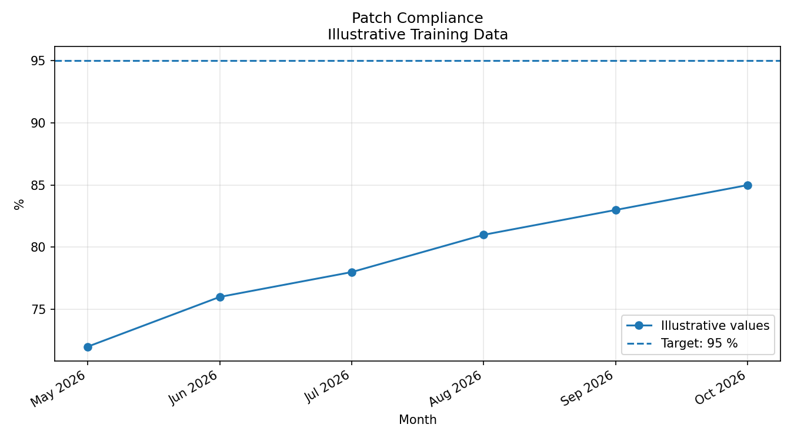
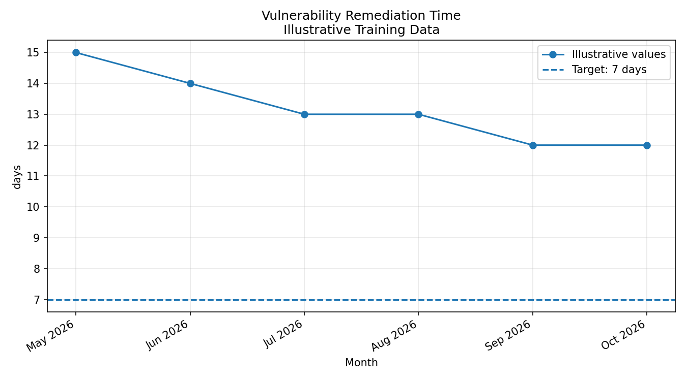
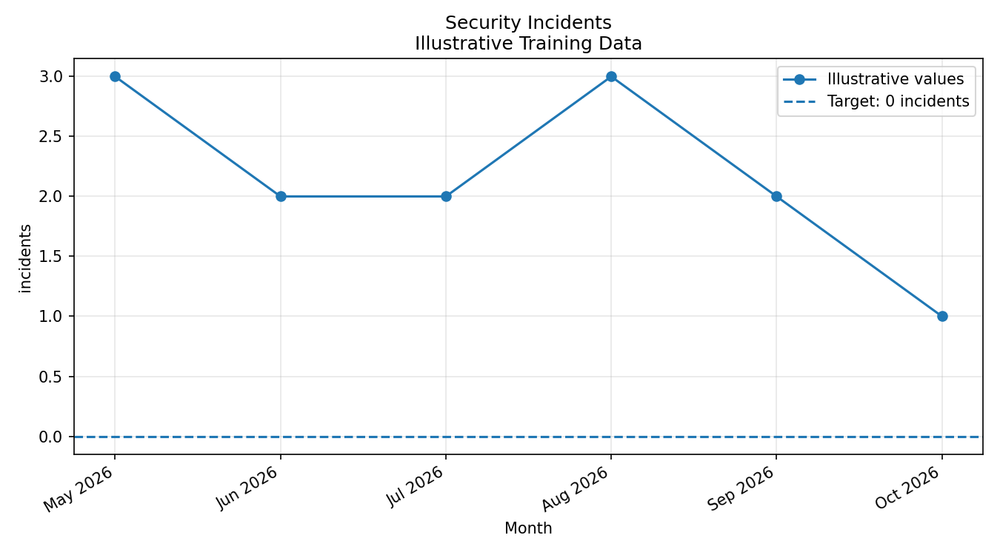
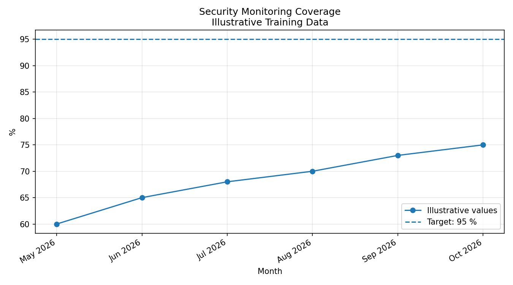
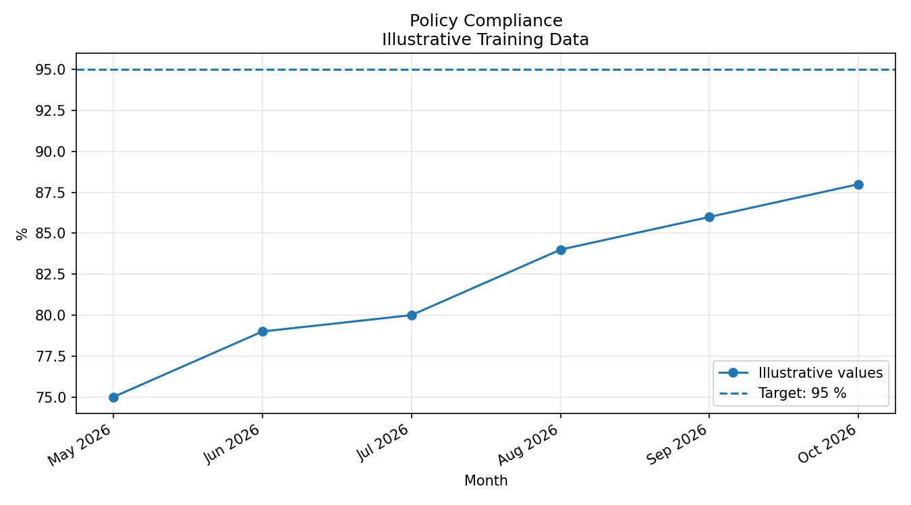

Generated: 2026-10-09T02:25:12.395965
| Issue | Severity | Status | Evidence |
|---|---|---|---|
| Apache Struts S2-045 | Critical | Open - retest unsuccessful | The post-control scanner still reports the critical finding, and the lab check still returns its vulnerability marker. |
| MySQL default root credentials | High | Open - remediation not verified | The configured default root password was still accepted by the database during technical verification. |
| Web-to-database connectivity | Review required | Connectivity confirmed | The web container could reach database TCP port 3306. |
| Network segmentation assessment | Inconclusive | Further testing required | The scanner's network check encountered a UTF-8 decoding error. |
The charts below demonstrate a possible reporting format using illustrative training data. They do not represent measured company performance or prove that controls improved.

Illustrative trend data, not verified organisational measurements.

Illustrative trend data, not verified organisational measurements.

Illustrative trend data, not verified organisational measurements.

Illustrative trend data, not verified organisational measurements.

Illustrative trend data, not verified organisational measurements.